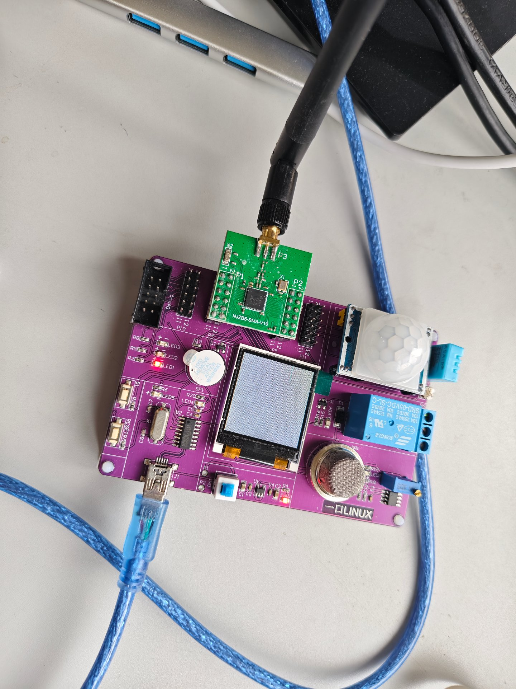
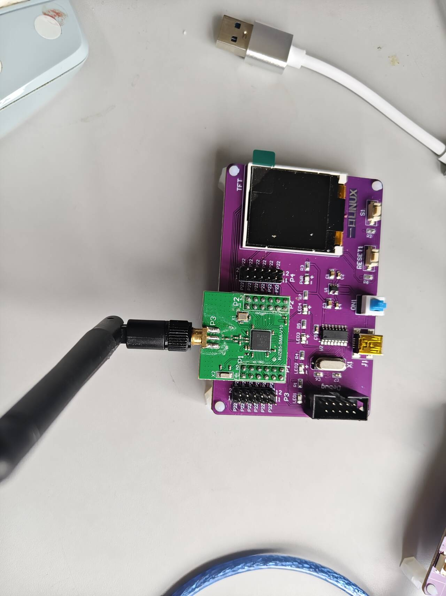
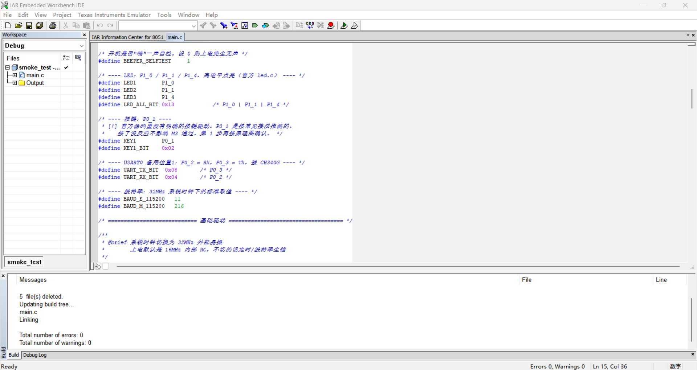
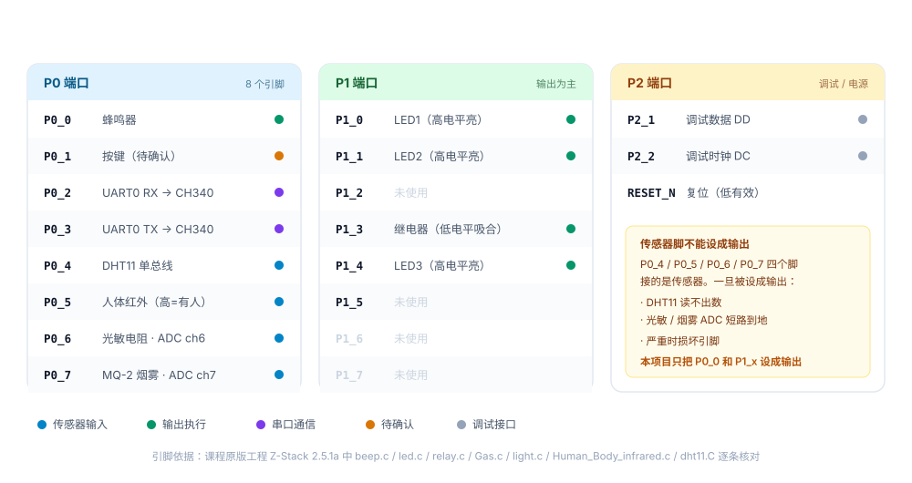
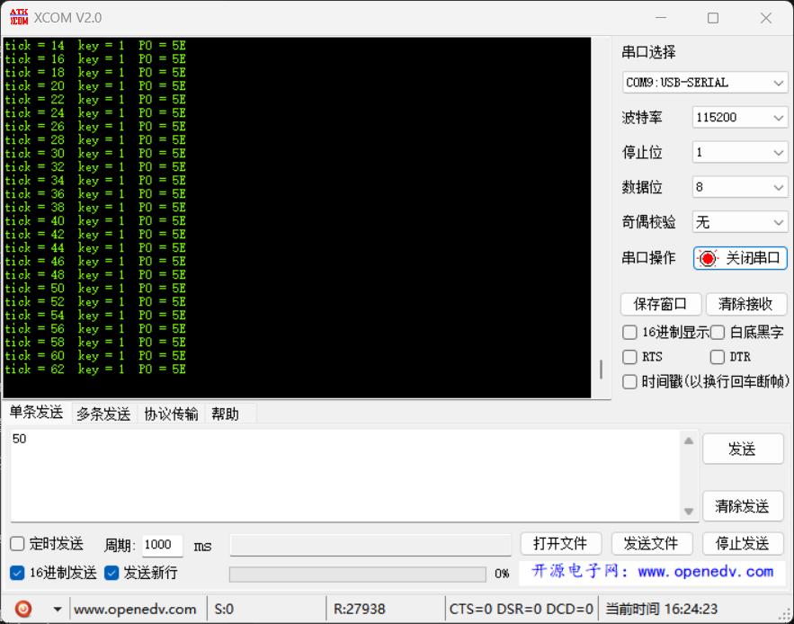

目标很简单：用 IAR 编译出一份自己写的固件，烧进 CC2530，串口能打出字。 听起来像「点个灯」级别的任务，实际做下来花了整整一天，中间踩了五个坑，其中两个能让人卡住半天。
这篇把每个坑的现象、根因和解法都记下来。如果你手里的也是 yLinux 那块 CC2530 紫板， 大概率会撞上同样的问题。
CC2530 Smoke Test v1.2 与每秒递增的 tick，
蜂鸣器只在开机时「嘀」一声，之后安静。CC2530 端 1805 字节代码，Intel HEX 116 条记录、零校验错误。
一、手上的硬件
| 部件 | 型号 | 说明 |
|---|---|---|
| 终端节点板 | yLinux CC2530 紫板 | 板载 DHT11、MQ-2、人体红外、光敏、继电器、蜂鸣器、3×LED、1.44" 彩屏 |
| 协调器板 | yLinux CC2530 紫板 | 只有 LED / 按键 / 彩屏，没有传感器 |
| 核心模块 | NuZeeS-SMA-V10 | CC2530F256，带 SMA 外置天线，视距约 400 m |
| 下载器 | SmartRF04EB 兼容版 | NUZB-810M03，10 Pin IDC 排线 |
| 开发环境 | IAR EW8051 | 本机为 Embedded Workbench 6.0 Evaluation |


把两张照片放在一起对照，比任何文字描述都好懂：终端节点板上密密麻麻都是传感器和继电器， 协调器板空得只剩一块屏。这就是为什么采集程序必须烧进前者。 一个细节：两块板的核心模块都是 NuZeeS-SMA-V10，通过 IPEX 转 SMA 接头接外置天线棒， 不靠 PCB 板载天线，这样节点可以放到房间另一头甚至楼下。
另外，IAR 里的
CoordinatorEB 是编译配置名，不等于「要烧到协调器板」——
两者没有任何绑定关系。
二、三个里程碑
工具链验证不要一步到位，拆成三个独立可验证的环节。任何一环失败都能立刻定位，不会「全都不对」。
| 里程碑 | 验证什么 | 通过标志 | 状态 |
|---|---|---|---|
| M1 | 编译链路 | 现成工程 Rebuild All 得到 errors: 0 |
通过 |
| M2 | 烧录链路 | Flash Programmer 能读出 Chip: CC2530F256 并烧写成功 |
通过 |
| M3 | 代码链路 | 自己写的 main.c 烧进去，串口打出预期字符串 |
通过 |
M2 是最难的一关，很多人卡在这里好几天。一旦「电脑 → 下载器 → 板子」这条线通了， 后面就只是写代码的事。所以先用 TI 现成的例程把 M1、M2 跑通，再动自己的代码。

Total number of errors: 0 / warnings: 0。注意代码区的中文注释是正常显示的——这说明源文件用 GBK 保存的选择是对的三、五个坑
按踩到的顺序记录。每一条都是真实卡住过的。
坑 1：IAR 版本和协议栈版本必须对上
Z-Stack 不是随便哪个 IAR 都能开。版本不对，打开工程直接报
Segment too long 或者一堆找不到符号的错误，看起来像代码问题，其实是工具链年代不对。
| Z-Stack 版本 | 配套 IAR EW8051 |
|---|---|
| Z-Stack 3.0.1 | 8.20.1 |
| Z-Stack 2.5.1a | 8.10 |
这个项目实际用的是 Z-Stack 2.5.1a + IAR 6.0 Evaluation。 课程配套源码就是 2.5.1a，而手上只有 6.0 评估版——比官方配套的 8.10 低了一代。 实测工程能正常编过、也能生成可烧录的 hex，所以没有强行升级工具链。 但要注意：这条路只对 2.5.1a 成立，3.0.1 在 6.0 上编不过。
另外还有个隐藏坑：IAR Kickstart 版有 4KB 代码限制。
裸机冒烟测试只有 1.8KB，能用；一旦上 Z-Stack（编译后 40~60KB），立刻报
Failed to fit。要么换正式授权，要么用评估版（32KB 限制，勉强够裸机）。
坑 2：Flash Programmer 2 根本不认 CC2530
TI 官网现在首页推的是 SmartRF Flash Programmer 2。装完打开，界面挺现代， 但你会发现找不到 CC2530——它只支持 CC13xx / CC26xx 那一代。
必须用老版的 1.12.8。识别方法很简单：
- 窗口标题是
SmartRF Flash Programmer（没有「2」） - 界面上方选项卡里有
Program CCxxxx SoC or MSP430
打开后，插好排线，上半区应该显示：
EB type CC Debugger
EB firmware ID 0xxxx
Chip CC2530F256
Flash size 256
顺便一个确认芯片的机会：Chip 那一栏会直接告诉你是不是 F256。
如果不是，Z-Stack 装不下，整个方案要改。这颗芯片最后确认是 CC2530F256，
所以两块板都能装下完整的 ZigBee 协议栈。
坑 3：蜂鸣器一上电就长鸣
板子插上 USB，还没烧任何程序，蜂鸣器就开始响。第一反应是板子坏了或者电源有问题。
其实是硬件设计特性。蜂鸣器接在 P0_0，由一颗 S8050（NPN）三极管驱动。
CC2530 复位后引脚默认状态是：
P0DIR = 0 → 引脚是【输入】，不是输出
P0INP = 0 → 内部上拉/下拉使能
默认上拉 → 引脚电压 ≈ 高电平这个弱上拉只有约 20kΩ，但漏出的约 0.1mA 电流进到 S8050 基极，放大 100~300 倍就是 10~30mA， 足够把有源蜂鸣器推动起来。这块板的蜂鸣器电路没有加下拉电阻，所以不烧程序也会一直响。
官方工程的做法（beep.c）：
#define BEEP_PIN P0_0
void InitBeep(void)
{
P0DIR |= 0x01; /* P0.0 设为输出 */
BEEP_PIN = 0; /* 输出低电平 → 静音 */
}
所以解法就是：初始化顺序里，把蜂鸣器静音放在最前面，
甚至早于串口初始化。我的 main() 里是这样排的：
void main(void)
{
clock_init(); /* 1. 切 32MHz 晶振 */
beeper_init(); /* 2. ★ 最优先：P0_0 转输出 + 拉低 */
uart0_init(); /* 3. 串口 */
led_init(); /* 4. LED */
}P0_6，代码写的是
P0DIR |= 0x40; P0_6 = 0;。烧进去蜂鸣器照响不误。因为
P0_6 根本不是蜂鸣器脚，而是光敏电阻的 ADC 输入通道。
更糟的是，把 ADC 输入脚设成输出并拉低，等于把光敏短路到地——这个问题会在第 1 步做光照采集时爆发。
坑 4：编译成功，但目录里没有 .hex
这是个最容易被误判成「我哪里配错了」的坑。现象是：IAR 里 Rebuild All 显示
errors: 0，但 Debug\Exe\ 里只有一个 smoke_test.d51，
没有 .hex，Flash Programmer 无从下手。
根因有两层：
- IAR 默认只生成 UBROF 调试文件（.d51），不生成烧录用的 hex，需要额外开启输出转换。
-
我这台机器装的是 IAR EW8051 6.0，这个版本的工程选项里
根本没有 Output Converter 页面。唯一能开的「额外输出」只支持
-Osimple-code格式——那是带IAR头的裸二进制，SmartRF 不认。
试过三条路，前两条都失败：
| 尝试 | 结果 |
|---|---|
在工程文件里开启 GenerateExtraOutput |
文件生成了，但开头是 IAR + 机器码，不是 Intel HEX，烧录器拒绝 |
找 COutputFormat 之类的字段名手动改工程 XML |
在 IAR 的所有 exe/dll 里（ASCII 和 UTF-16 都搜过）不存在，证明 6.0 无此功能 |
| 自定义链接文件，追加输出格式参数 | 成功 编译即产出标准 Intel HEX |
具体做法：把 IAR 自带的 lnk51ew_cc2530F256_banked.xcl 复制到工程目录，
末尾追加一行，然后把工程的 Linker 配置指向这份自定义链接文件。
// lnk_smoke.xcl 末尾追加
-Ointel-extended=Debug\Exe\smoke_test.hex
xcl 是链接器的配置文件，里面写的就是 xlink 的选项。
加完这一行之后，正常按 F7 就会自动产出 Intel HEX，不需要任何额外操作。
.hex，
第一行必须是冒号开头的文本：
:020000040000FA
:1000000002005000000080FB120080B900030200D3IAR 加一堆乱码，说明格式还是 simple-code，烧录器不会认。
顺带一个验证方法：Intel HEX 每条记录的字节和（含校验字节）必须是 0。写个脚本扫一遍就能确认：
116 条记录 · 0 个校验错误
地址范围 0x00000 ~ 0x0070D · 有效长度 1805 字节坑 5：中文注释在 IAR 里全是乱码
源文件是 UTF-8 编码，IAR 按系统 ANSI（简体中文 = GBK）打开，
于是所有中文都变成了 工具�? 这种样子。
解法：把源文件存成 GBK/ANSI 编码。在 IAR 里写代码就按 GBK 存， 这样中文注释正常显示。反过来，如果要在 VS Code 里同时编辑，记得把编码切到 GB18030，否则另存一次又变回 UTF-8。
⚠️、✅），建议全部换成 ASCII 标记如
[!]、[OK]，避免编码转换时丢字符。
四、真正的教训：别信原理图的网络标号
蜂鸣器那个错，代价是烧了两次板子、改了两版代码。追根溯源，问题出在引脚表的来源上。
最早是我从原理图 PDF 里提取网络标号，得到一份表：蜂鸣器 P0_6、光敏 P1_1、MQ-2 P0_0、继电器 P0_5。 这份表几乎全错。PDF 里的网络标号是分块画的，提取时对应关系看串了行。
后来翻到课程配套的原版工程源码（Z-Stack 2.5.1a 的 GenericApp/Source/），
里面有 beep.c、led.c、relay.c、light.c、
Gas.c、Human_Body_infrared.c、dht11.C —— 每一个都是能跑通的成品。
对着源码逐条核对，才是真表：
| 功能 | 真实引脚 | 依据 | 原错误记录 |
|---|---|---|---|
| 蜂鸣器 | P0_0（高电平响） | beep.c | ~~P0_6~~ |
| DHT11 | P0_4 | dht11.C | P0_4 ✓ |
| 人体红外 | P0_5（高=有人） | Human_Body_infrared.c | ~~P0_4~~ |
| 光敏电阻 | P0_6（ADC ch6） | light.c | ~~P1_1~~ |
| MQ-2 烟雾 | P0_7（ADC ch7） | Gas.c | ~~P0_0~~ |
| 继电器 | P1_3（低电平吸合） | relay.c | ~~P0_5~~ |
| LED1 / 2 / 3 | P1_0 / P1_1 / P1_4（高电平亮） | led.c | 只记了 P1_0 |

教训一句话：手里有能跑的官方源码时，信源码，别信原理图导出物。
原理图描述的是「设计意图」，源码描述的是「实际能工作的东西」。两者冲突时，后者赢。
五、最终的 main.c
裸机版本，不依赖 Z-Stack，只操作寄存器。整个文件三百来行，核心就几块：
时钟：必须切到 32MHz 外部晶振
static void clock_init(void)
{
CLKCONCMD &= ~0x40; /* bit6=0：选 32MHz 晶振 */
while (CLKCONSTA & 0x40); /* 等晶振稳定 */
CLKCONCMD &= ~0x47; /* 主时钟不分频 */
}上电默认跑 16MHz 内部 RC。不切晶振的话波特率会差一档，串口收到的全是乱码—— 这个现象很容易被误判成「波特率设错了」，其实是时钟没起振。
串口：115200-8-N-1，查询方式发送
static void uart0_init(void)
{
PERCFG &= ~0x01; /* UART0 用备用位置 1 */
P0SEL |= (0x08 | 0x04); /* P0_3 TX / P0_2 RX 设外设功能 */
P2DIR &= ~0xC0; /* P0 口优先给外设 */
U0CSR |= 0x80; /* UART 模式 */
U0GCR = 11; /* BAUD_E */
U0BAUD = 216; /* BAUD_M */
U0CSR |= 0x40; /* 使能接收 */
}
U0GCR=11 / U0BAUD=216 是 32MHz 下 115200 的标准取值，不用自己算。
不用 printf，自己写整数转字符串
printf 会拉进 3~8KB 的库代码，对裸机来说太重。手写一个几十字节的就够：
static void uart_putu(unsigned int v)
{
char buf[6];
char i = 0;
if (v == 0) { uart_putc('0'); return; }
while (v > 0) { buf[i++] = (char)('0' + (v % 10)); v /= 10; }
while (i > 0) { uart_putc(buf[--i]); }
}六、串口输出
烧进去、插上 USB、开串口工具 115200-8-N-1、流控全关：
================================
CC2530 Smoke Test v1.2
Build: 2026-10-22
================================
[OK] Clock : 32MHz XOSC
[OK] UART0 : 115200-8-N-1 (P0_2/P0_3)
[OK] BEEPER: P0_0 -> muted
[OK] LED : P1_0/P1_1/P1_4 output
[OK] KEY : P0_1 input (unverified)
[--] Reserved for sensors:
P0_4 DHT11 / P0_5 human
P0_6 light / P0_7 gas
--------------------------------
[TEST] Beeper: one short beep...
[OK] Beeper: back to mute
--------------------------------
If you can read this, your
toolchain is fully working.
--------------------------------
tick = 14 key = 1 P0 = 5E
tick = 16 key = 1 P0 = 5E
tick = 18 key = 1 P0 = 5E
tick = 20 key = 1 P0 = 5E
tick = 22 key = 1 P0 = 5E
...
tick = 58 key = 1 P0 = 5E
tick = 60 key = 1 P0 = 5E
tick = 62 key = 1 P0 = 5E
一行 P0 值，把整块板的引脚状态说清楚了
每行末尾的 P0 = 是特意加的调试信息：把端口 0 的八位值一次性打出来。
原来以为会打出 01（只有蜂鸣器脚是 1），实际跑起来是稳定的 5E。
把它按位拆开就明白了：
| 位 | 掩码 | 引脚 | 5E 里的值 | 含义 |
|---|---|---|---|---|
| bit 0 | 0x01 | P0_0 蜂鸣器 | 0 | 输出低 = 静音，静音生效的直接证据 |
| bit 1 | 0x02 | P0_1 按键 | 1 | 上拉状态，未按下 |
| bit 2 | 0x04 | P0_2 UART RX | 1 | 已切到外设功能 |
| bit 3 | 0x08 | P0_3 UART TX | 1 | 已切到外设功能 |
| bit 4 | 0x10 | P0_4 DHT11 | 1 | 上拉，单总线空闲态为高 |
| bit 5 | 0x20 | P0_5 人体红外 | 0 | 没人，输出低（有人时会变成 1） |
| bit 6 | 0x40 | P0_6 光敏 | 1 | 上拉 |
| bit 7 | 0x80 | P0_7 MQ-2 | 0 | 模拟输出为低 |
5E = 0101 1110，拆完和引脚表对得上，一个都没错位。
这本身就是一次校验：如果我早些时候把蜂鸣器记成 P0_6（那其实是光敏脚），
那么 bit 0 就不会是 0，而是跟着上拉变 1——数字会立刻把错误指出来。
顺便记一个经验：调试过程中也见到过 P0 变成 7E，
5E 和 7E 只差 0x20，也就是 bit 5——人体红外那一脚。
HC-SR501 上电后有几十秒预热期，室内光线、气流变化也会让它输出波动，所以这一位偶尔翻一下是正常的，
不是接触不良，也别急着换板子。这一步的目标是验证工具链，传感器行为留到第 1 步再处理。
而 bit 0 = 0 是最值得看的一格。蜂鸣器脚输出低电平，声音才会停；
这一位是 0，等于硬件在替我说「静音成功」。这比「我听了一下不响了」更可信。
现场排查引脚问题时，把端口值打出来比任何工具都好用——它不会骗你，也不会因为你看错丝印而错。
七、复盘
| 坑 | 表面现象 | 真实根因 | 怎么避免 |
|---|---|---|---|
| IAR 版本 | 一堆找不到符号 | 协议栈与编译器年代不匹配 | 先查协议栈文档要求的 IAR 版本 |
| Flash Programmer 2 | 找不到 CC2530 型号 | 新版只支持 CC13xx/CC26xx | 固定用 1.12.8 |
| 蜂鸣器长鸣 | 不烧程序也响 | P0_0 复位弱上拉 + 无下拉电阻 | 初始化第一步就拉低 |
| 没有 .hex | 编译成功但无法烧录 | IAR 6.0 无 Output Converter | 自定义 .xcl 追加 -Ointel-extended |
| 中文乱码 | 注释变问号 | UTF-8 文件被按 GBK 解析 | 源文件统一存 GBK |
另外还有一条经验跟技术无关，但很有用：工具链问题一定要拆成独立环节验证。 M1 只验证编译、M2 只验证烧录、M3 才验证自己的代码。如果一上来就写代码、一次失败， 你没法判断是代码写错、编译器配错还是下载器没通——三种可能混在一起，排查成本翻好几倍。
八、下一步
第 0 周结束意味着「有了一条能用的开发闭环」。接下来第 1 步：让这块板真正开始干活。
- DHT11 读温湿度（单总线时序，需要微秒级延时）
- MQ-2 与光敏读模拟量（ADC，注意两个通道要切换
ADCCON3） - 人体红外读数字量
- 1.44" 彩屏本地显示 + 串口同步输出
到这一步才会真正用上那张引脚表，也才会理解为什么「P0_4 / P0_5 / P0_6 / P0_7 绝对不能设成输出」。